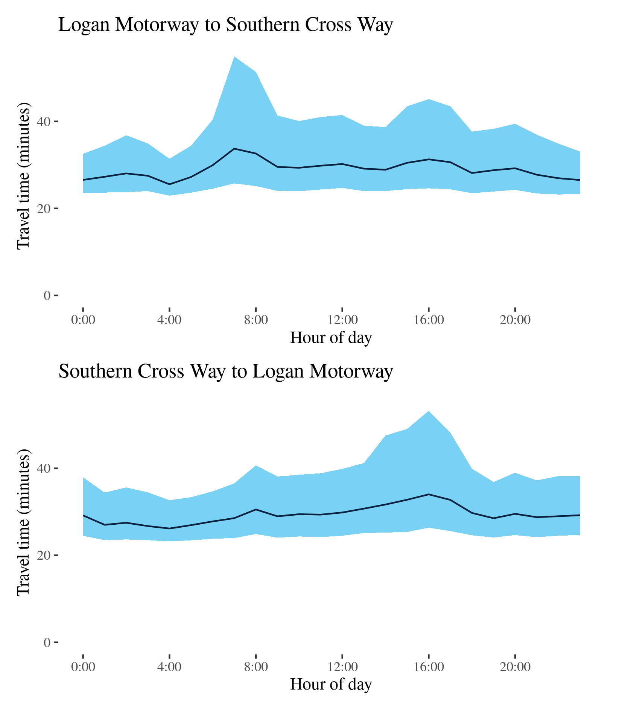

Congestion Report 2020
Congestion Report 2020Brisbane
The figure below shows all 10 selected Brisbane freight vehicle routes and an index of the METR across each route.
The figure below shows changes in the METRs and MEURs across each of the 10 selected Brisbane freight vehicle routes. Most routes in Brisbane experienced reductions in travel time congestion, though less substantial than the reductions in Melbourne and Sydney, presumably due to shorter lockdowns and less intense peaks in ordinary conditions. In particular, the highly-weighted M1 experienced reductions in both directions.
There was no clear pattern in changes in travel time uncertainty across the 10 Brisbane routes, despite an increase in the city-wide measure.

M1 - Bruce Hwy to Pacific Motorway / Pacific Motorway to Bruce Hwy
This route crosses Brisbane from north to south. Travelling from the Gympie Arterial Road (M3) at Bald Hills in the north of Brisbane to Eight Mile Plains in the south of Brisbane, crossing the Brisbane River near Eagle Farm. It encompasses most of the Gateway Motorway. It is a major intercity and interregional route through its connections with the Pacific Motorway and Bruce Highway. This route also connects to the M2, M3, M4, M6 and M7 (via Southern Cross Way) motorways also covered in this report.

| Direction | Best travel time | Longest median travel time | METR | Least uncertainty range | Most uncertainty range | MEUR | Distance |
|---|---|---|---|---|---|---|---|
| Bruce Hwy to Pacific Motorway | 0:24:06 | 0:25:42 | 1.02 | 0:02:14 | 0:08:14 | 1.435 | 37.7 |
| Pacific Motorway to Bruce Hwy | 0:23:45 | 0:36:28 | 1.067 | 0:01:43 | 0:26:54 | 3.19 | 37.5 |
The best travel times and least uncertainty heading south from the Bruce Highway to the Pacific Motorway were experienced at midnight with a median travel time of 24 minutes and an interquartile range of 2 minutes. The longest median travel times and most uncertainty were experienced in the afternoon peak at 4pm with a median of 26 minutes and an interquartile range of 8 minutes, improvements of 6 and 7 minutes, respectively, from 2019. Comparing to 2019, uncertainty in the afternoon peak was reduced but still apparent, but the travel time peak was eliminated.
The best travel times and lowest uncertainty heading north from the Pacific Motorway to the Bruce Highway were experienced at 7pm with a median travel time of 24 minutes and an interquartile range of 103 seconds. The longest median travel times and most uncertainty were experienced in the afternoon peak at 4pm with a median of 36 minutes and an interquartile range of 27 minutes, both of which were more severe than these of the southbound direction. Delays were most severe in the portion of the route north of Nudgee. The milder morning peak was largely eliminated but the afternoon peak remained largely unchanged.
The afternoon peaks in both directions can be attributed to commuter traffic leaving the inner areas of Brisbane.
M2 (North) - Logan Motorway to Pacific Motorway / Pacific Motorway to Logan Motorway
This route consists of the Gateway Motorway section of the M2 linking the M1 and the Logan Motorway at Drewvale in Southern Brisbane.
| Direction | Best travel time | Longest median travel time | METR | Least uncertainty range | Most uncertainty range | MEUR | Distance |
|---|---|---|---|---|---|---|---|
| Logan Motorway to Pacific Motorway | 0:05:19 | 0:05:41 | 1.012 | 0:00:26 | 0:01:51 | 1.456 | 8.4 |
| Pacific Motorway to Logan Motorway | 0:05:08 | 0:05:22 | 1.017 | 0:00:20 | 0:00:42 | 1.485 | 8.3 |
The best median travel time heading north from the Logan Motorway to the Pacific Motorway was 5 minutes at 4am and the least uncertainty were experienced at 7pm with an interquartile range of 26 seconds. The longest median travel times and greatest uncertainty were at 8am with median times of 5.5 minutes and an interquartile range of 2 minutes. There was a very mild peak in the morning at 7am but otherwise travel time and uncertainty were stable throughout the day time. High uncertainty during the night, as observed in 2019, was no longer apparent, supporting the supposition it was related to roadworks.
The best median travel times heading south from the Pacific Motorway to the Logan Highway were 5 minutes at 3am and the least uncertain travel times were experienced at 4am with an interquartile range of 20 seconds. The longest median travel times and most uncertainty were at 4pm with a median of 5.5 minutes and an interquartile range of 42 seconds. Like the northbound direction, travel times were stable during the day time and nighttime uncertainty were eliminated.
The best and longest travel time as well as the least and greatest uncertainty of both directions were the same or very similar with only seconds difference.
M2 (West) - Gateway Motorway to Ipswich Motorway / Ipswich Motorway to Gateway
This route uses the Logan Motorway section of the M2 between its confluence with the Gateway Motorway (M2 North) and junction with the M7 (Ipswich Motorway) at Gailes. It crosses the M5 (Centenary Highway) at Carole Park.

| Direction | Best travel time | Longest median travel time | METR | Least uncertainty range | Most uncertainty range | MEUR | Distance |
|---|---|---|---|---|---|---|---|
| Gateway Motorway to Ipswich Motorway | 0:10:15 | 0:10:48 | 1.02 | 0:00:53 | 0:03:02 | 1.477 | 16.1 |
| Ipswich Motorway to Gateway Motorway | 0:10:04 | 0:11:23 | 1.028 | 0:01:06 | 0:08:09 | 1.799 | 15.8 |
The best median travel times and lowest uncertainty heading west from the Gateway Motorway to the Ipswich Motorway were at 3am with a median travel time of 10 minutes and an interquartile range of 1 minute. The longest median travel times and highest uncertainty were at 7am with median times of 11 minutes and an interquartile range of 3 minutes. Travel times were relatively stable throughout the day.
The best median travel time heading east from the Ipswich Motorway to the Gateway Motorway were 10 minutes at 3am and the least uncertain travel times were experienced at 4am with an interquartile range of 1 minutes. The longest median travel times and the most uncertainty were experienced in the afternoon peak at 4pm with a median of 11 minutes and an interquartile range of 8 minutes, both of which were slightly down on 2019.
Travel times are relatively stable in both directions except during the afternoon peak for journeys heading east to the Gateway Motorway. Mildly increased travel time and uncertainty were present in both directions at night during 2019 but not 2020.
M3-A3 - Airport Link to M1 / M1 to Airport Link
This route follows the M3 and the surface road A3 with one end merging with the M1 at Bald Hills and the other meeting Airport Link (M7) next to Gordon Park. It is known as Gympie Road when labelled as the A3 and the Gympie Arterial Road when labelled as the M3.

| Direction | Best travel time | Longest median travel time | METR | Least uncertainty range | Most uncertainty range | MEUR | Distance |
|---|---|---|---|---|---|---|---|
| Airport Link to M1 | 0:13:05 | 0:19:19 | 1.158 | 0:04:52 | 0:18:06 | 1.866 | 13.0 |
| M1 to Airport Link | 0:11:15 | 0:15:34 | 1.19 | 0:02:12 | 0:12:17 | 3.263 | 13.0 |
The best median travel times and least uncertainty heading north from the Airport Link to the Bruce Highway were at 5am and midnight with a median of 13 minutes and an interquartile range of 5 minutes. The longest median travel times and most uncertainty were experienced in the afternoon peak at 4 and 3pm with a median of 19 minutes and an interquartile range of 18 minutes down 1.5 and 4.5 minutes, respectively, on 2019. Delays were most significant at the southerly end of the A3 portion of the route near Chermside and at the southerly end of the M3 portion. Unusually amongst the routes in this report, travel time uncertainty increased gradually throughout business hours to a distinct afternoon peak, a pattern also evident in 2019, although congestion in the afternoon was reduced.
The best median travel times heading south from the M1 to the Airport Link was 11 minutes at 1am and the least uncertainty were experienced at 4am with an interquartile range of 2 minutes. The longest median travel times and greatest uncertainty were at 4pm in the afternoon peak with a median time of 16 minutes at an interquartile range of 12 minutes. Delays were most severe in the A3 section where it uses surface roads. As in 2019, travel time and uncertainty were slightly elevated throughout business hours rather than experiencing a distinct peak such as along the northbound route.
M3 (South) - Inner City Bypass to Pacific Motorway / Pacific Motorway to Inner City Bypass
This route follows the M3 connecting the Inner City Bypass at Bowen Hills and the M1 (Pacific Motorway) at Springwood in Brisbane’s southeast. It passes around the western edge of the CBD and crosses the Brisbane River at Woolloongabba and follows the Pacific Motorway.

| Direction | Best travel time | Longest median travel time | METR | Least uncertainty range | Most uncertainty range | MEUR | Distance |
|---|---|---|---|---|---|---|---|
| Inner City Bypass to Pacific Motorway | 0:16:00 | 0:21:28 | 1.055 | 0:02:47 | 0:17:50 | 2.059 | 20.1 |
| Pacific Motorway to Inner City Bypass | 0:14:58 | 0:19:23 | 1.088 | 0:01:25 | 0:11:30 | 3.096 | 20.1 |
The best travel times and the least uncertainty heading south to the Pacific Motorway were experienced at 7pm with a median travel time of 16 minutes and an interquartile range of 3 minutes. The longest median travel times and the greatest travel time uncertainty were at 3pm with a median of 21 minutes and an interquartile range of 18 minutes, reductions of 10 and 13 minutes respectively. There was also a milder and less prolonged morning peak. Delays were most severe near and south of the Brisbane River crossing and near the junction with the M1. The pattern of congestion was similar to 2019 but with much lower peaks in both congestion and uncertainty.
The best travel times and lowest uncertainty heading north from the Pacific Highway to the Inner City Bypass were experienced at 4am with a median travel time of 15 minutes an interquartile range of 85 seconds, both are very similar to 2019. The longest median travel times and the greatest range of variation were experienced during the morning peak at 8am with a median travel time of 19 minutes and an interquartile range of 11.5 minutes, down 6 and 9 minutes, respectively, from 2019. Like 2019, there were both morning and afternoon peak but both peaks were slightly lower in 2020. In both peaks, delays were most severe near the Brisbane River crossing.
M4 - Gateway Motorway to Port of Brisbane / Port of Brisbane to Gateway Motorway
This route links the Gateway Motorway (M1) at Murarrie and the Port of Brisbane via Port Drive and Port of Brisbane Motorway. It is an important route for freight to and from the Port but is not a major commuter route.

| Direction | Best travel time | Longest median travel time | METR | Least uncertainty range | Most uncertainty range | MEUR | Distance |
|---|---|---|---|---|---|---|---|
| Gateway Motorway to Port of Brisbane | 0:10:01 | 0:10:23 | 1.024 | 0:01:17 | 0:02:36 | 1.755 | 11.7 |
| Port of Brisbane to Gateway Motorway | 0:09:52 | 0:10:06 | 1.011 | 0:01:33 | 0:02:45 | 1.418 | 11.7 |
The best travel times and least uncertainty travelling to the Port were experienced at 3am with a median travel time of 10 minutes and an interquartile range of 77 seconds. The longest median travel times were at 8pm with a median of 10.5 minutes and the greatest uncertainty were experienced at 9pm with an interquartile range of 2.5 minutes. There were no distinct peak periods as this route has little or no commuter traffic.
The best median travel times travelling from the Port to the Gateway Motorway was 10 minutes at 10pm and the least uncertainty were experienced at 3am with an interquartile range of 1.5 minutes. The longest median travel times and the greatest uncertainty were experienced at 3 and 4 pm with a median of 10 minutes and an interquartile range of 3 minutes. Like the Port-bound route there were no distinct peak periods. There is little change over 2019 in travel time and uncertainty on this route.
M5 - Bowen Hills to Logan Motorway / Logan Motorway to Bowen Hills
This route follows the M5 from the M3 and M7 motorways at Bowen Hills and meets the Logan Motorway (M2) at Forest Lake. It traverses the southwest fringe of Brisbane and is known at various points as the Inner City Bypass, Legacy Tunnel, Western Freeway and Centenary Highway.
| Direction | Best travel time | Longest median travel time | METR | Least uncertainty range | Most uncertainty range | MEUR | Distance |
|---|---|---|---|---|---|---|---|
| Bowen Hills to Logan Motorway | 0:18:28 | 0:24:46 | 1.071 | 0:04:35 | 0:23:12 | 1.647 | 24.1 |
| Logan Motorway to Bowen Hills | 0:18:36 | 0:22:22 | 1.056 | 0:04:03 | 0:14:14 | 1.622 | 24.2 |
The best travel times and least uncertainty travelling from Bowen Hills to the Logan Motorway were experienced at 5am with a median travel time of 18.5 minutes and an interquartile range of 4.5 minutes. The longest median travel times and greatest uncertainty were experienced in the afternoon peak at 4pm with a median of 25 minutes and an interquartile range of 23 minutes, down 4 and 25 minutes, respectively, on 2019. Apart from this period, both travel time and uncertainty were relatively stable throughout the day. Delays were most apparent on the Centenary Highway near where it crosses the Brisbane River. Whilst the afternoon peak from 2019 remained, travel times and especially uncertainty during the peak were lower in 2020.
The best median travel times travelling from the Logan Motorway to Bowen Hills were 19 minutes at midnight and the least uncertain travel times were experienced at 10pm with an interquartile range of 4 minutes. The highest median travel times and greatest uncertainty were experienced in the morning peak at 7am with a median of 22 minutes and an interquartile range of 14 minutes, down 4 and 13 minutes, respectively, from 2019. Like the southbound route, the peak of uncertainty was much more prominent than the peak of median travel time and also reduced by a larger amount in 2020. Delays were again most significant on the Centenary Highway near where it crosses the Brisbane River.
M6 - Gateway Motorway to Pacific Motorway / Pacific Motorway to Gateway Motorway
The M6 route merges with the M2 at Drewvale and meets the Pacific Motorway (M1) at Loganholme using the Logan Motorway
| Direction | Best travel time | Longest median travel time | METR | Least uncertainty range | Most uncertainty range | MEUR | Distance |
|---|---|---|---|---|---|---|---|
| Gateway Motorway to Pacific Motorway | 0:09:06 | 0:09:20 | 1.014 | 0:00:38 | 0:02:12 | 1.538 | 14.6 |
| Pacific Motorway to Gateway Motorway | 0:08:59 | 0:09:25 | 1.027 | 0:00:44 | 0:01:32 | 1.376 | 14.5 |
The best median travel times travelling east from the Gateway Motorway to the Pacific Motorway was 9 minutes at 1am and the lowest uncertainty were experienced at 4am with an interquartile range of 38 seconds. The longest median travel times and highest uncertainty were experienced at 5pm with a median of 9.5 minutes and an interquartile range of 2 minutes. As in 2019 there was little variation in either measure throughout the day and no discernible peaks.
The shortest travel time and lowest uncertainty westbound from the Pacific Motorway to the Gateway Motorway were experienced at 4am with a median travel time of 9 minutes and an interquartile range of 44 seconds. The longest median travel times and greatest uncertainty were experienced in the morning peak at 7 and 6am with a median travel time of 9.5 minutes and an interquartile range of 1.5 minutes, down 2.5 and 6 minutes, respectively, from 2019. The distinct peak in the morning with delays near the western end of the route near the Gateway Motorway that was evident in 2019 was not apparent in 2020.
M7-A7 - Logan Motorway to Southern Cross Way / Southern Cross Way to Logan Motorway
This route follows the A7 and M7 through central Brisbane and links the Logan Motorway (M2) at Gailes in the south and the Southern Cross Way branch of the Gateway Motorway near Brisbane Airport. It uses Ipswich Motorway (M7), Ipswich Road (A7) and Airport Link M7 past the CBD and under the Brisbane River as the Clem Jones Tunnel along its way.

| Direction | Best travel time | Longest median travel time | METR | Least uncertainty range | Most uncertainty range | MEUR | Distance |
|---|---|---|---|---|---|---|---|
| Logan Motorway to Southern Cross Way | 0:25:33 | 0:33:44 | 1.134 | 0:08:29 | 0:29:12 | 1.81 | 30.5 |
| Southern Cross Way to Logan Motorway | 0:26:10 | 0:34:01 | 1.122 | 0:09:28 | 0:26:52 | 1.577 | 30.5 |
The best travel times and lowest range of variation northbound from the Logan Motorway to Southern Cross Way were experienced at 4am with a median travel time of 26 minutes and an interquartile range of 8.5 minutes. The longest median travel times and greatest uncertainty were experienced at 7am in the morning peak with a median of 34 minutes and an interquartile range of 29 minutes, down 3.5 and 8 minutes, respectively, from 2019. Delays were most apparent on the surface section (Ipswich Road) of this route and the Ipswich Motorway near Oxley.
The best travel times and least uncertainty southbound from Southern Cross Way to the Logan Motorway were at 4am with a median travel time of 26 minutes and an interquartile range of 9.5 minutes. The longest median travel times and greatest range of variation were experienced in the afternoon peak at 4pm with a median of 34 minutes and an interquartile range of 27 minutes, down 3 and 5 minutes, respectively, from 2019. Congestion was most apparent near Route 2 at Rocklea.
Like 2019 the data exhibits morning and afternoon travel time peaks and uncertainty in both directions. The morning peak is more severe than the afternoon peak northbound to Southern Cross Way, but the opposite is true for the reverse journey. This makes the M7-A7 route one of the most symmetrical routes in this report.

Route 2 - A7 to Gateway / Gateway to A7
This short surface route links the M7/A7 at Rocklea with the Gateway Motorway (M1) at Mackenzie. It passes Robertson and under the Pacific Motorway (M3) along the way.

| Direction | Best travel time | Longest median travel time | METR | Least uncertainty range | Most uncertainty range | MEUR | Distance |
|---|---|---|---|---|---|---|---|
| A7 to Gateway | 0:11:14 | 0:19:01 | 1.213 | 0:02:53 | 0:20:35 | 2.742 | 11.1 |
| Gateway to A7 | 0:11:06 | 0:15:22 | 1.172 | 0:02:11 | 0:14:53 | 3.487 | 11.1 |
Eastbound from M7/A7 junction to the Gateway Motorway, the best travel times and lowest uncertainty were experienced at 3am with a median travel time of 11 minutes and an interquartile range of nearly 3 minutes. The longest median travel times and most uncertain travel time were experienced at 8am during the morning peak with a median of 19 minutes and an interquartile range of 21minutes, up 2 and 4.5 minutes, respectively, on 2019. Like 2019 there was also a prolonged afternoon peak. Delays were spread relatively evenly along the route but more apparent near the M3.
Westbound from the Gateway Motorway to the M7/A7 junction, the shortest median travel times and least uncertain travel time were at 3am with a median of 11 minutes and an interquartile range of 2 minutes. The longest median travel times and most uncertain travel times were experienced during the morning peak at 8am with a median of 15 minutes and an interquartile range of 15 minutes. There was also a similar afternoon peak. Again delays were more apparent near the M3 but also near Beaudesert Road in both peaks.
In both directions, average travel times were higher and the variation in travel greater during business hours. However, morning and afternoon peaks were more pronounced on the westbound route from the A7/M7 junction. The route was largely unchanged from 2019.